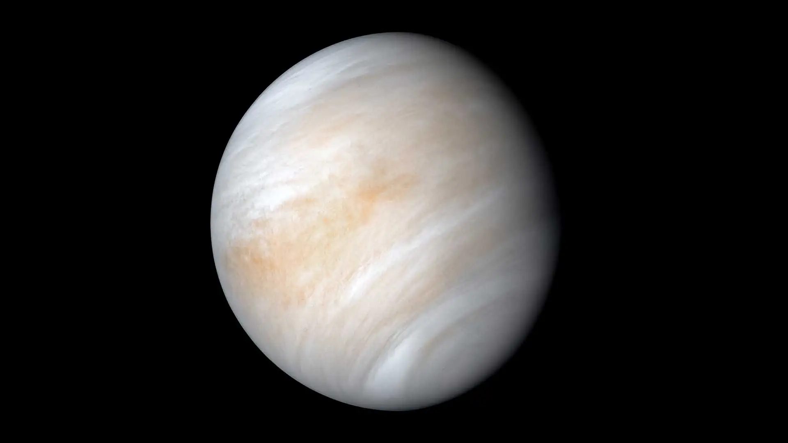
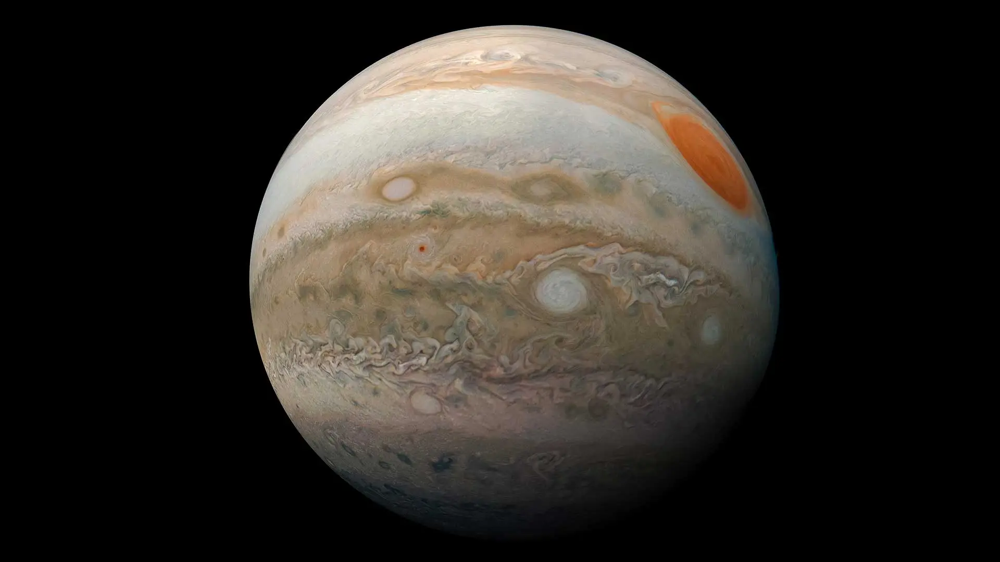
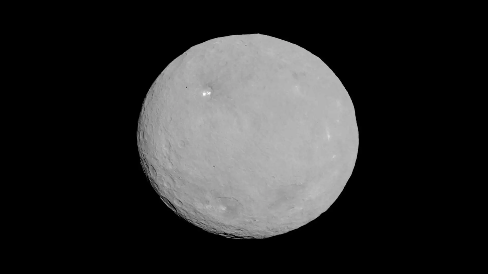
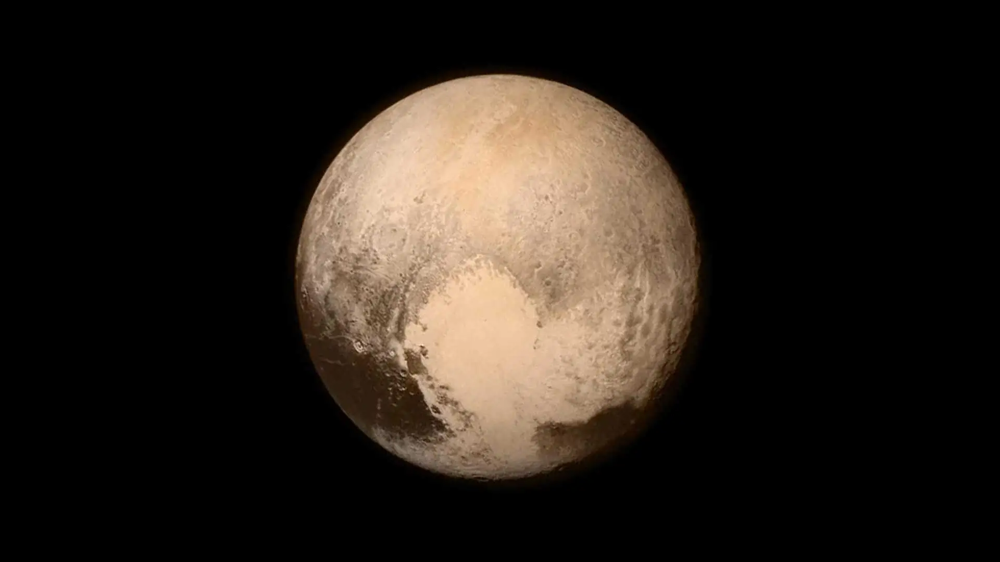
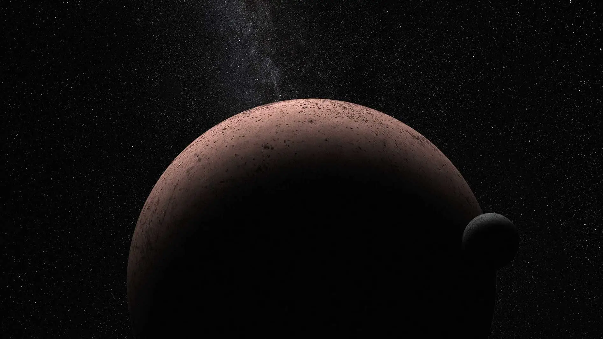

The solar system has eight planets:
Mercury, Venus, Earth, Mars, Jupiter, Saturn, Uranus, and Neptune.
There are five officially recognized dwarf planets
in our solar system: Ceres, Pluto, Haumea, Makemake, and Eris.

Venus is similar in size to Earth but has a thick, toxic atmosphere.
Explore Venus
Jupiter is the largest planet in the solar system and has a Great Red Spot.
Explore Jupiter
Ceres is the largest object in the asteroid belt and the only dwarf planet in the inner solar system.
Explore Ceres
Pluto was once the ninth planet but is now classified as a dwarf planet.
Explore Pluto
Makemake was discovered in 2005 and is located in the Kuiper Belt.
Explore Makemake